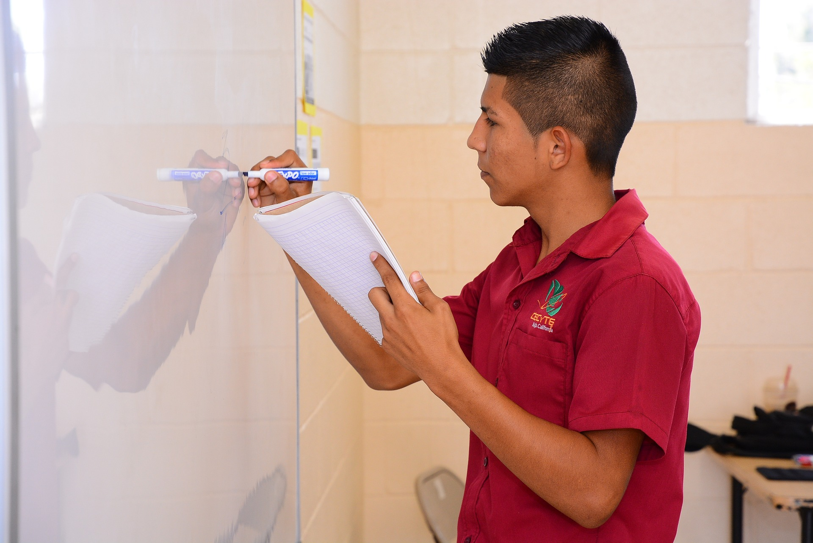

.jpg)

Masterclass completamente en VIVO revela:
*Cupo limitado a 100 participantes
Días
Horas
Minutos
Segundos
Será el 11 de febrero del 2022
19:00 hrs (Hora Centro)
Accede a nuestra MASTERCLASS FORMATIVA E INFORMATIVA y aprende sobre diseño e impartición de cursos tanto online como presenciales, herramientas digitales y formación por competencias. Además, identifica cómo puedes conseguir tu Registro Nacional como Desarrollador de Cursos Certificado ante la SEP-CONOCER.
La masterclass aplica para instructores, profesores, formadores y en general, para las personas que se dedican o quieren dedicarse al desarrollo de cursos de formación en línea, incluso si tienes POCA experiencia.
En esta masterclass Gratuita Aprenderás 3 Estrategias de Alto Impacto:
Aprenderás la normatividad y metodología oficial para diseñar y desarrollar cursos de formación tanto en línea como presenciales pertinentes y de calidad.
Aprenderás cuáles son las competencias digitales docentes alineadas a las mejores prácticas nacionales e internacionales para desarrollar cursos en línea.

Aprenderás cómo convertirte en un profesional certificado, ante la SEP y el CONOCER, para diseñar e impartir cursos de formación tanto en línea como presenciales.
Tus datos están completamente seguros y no los compartiremos con terceros. No te enviaremos spam
Viernes 11 de febrero del 2022 a las 19:00 horas a través de ZOOM
Estamos limitados a solo 100 participantes en LA MASTERCLASS
Días
Horas
Minutos
Segundos
El registro se cierra en breve ¡Apúrate!
María Luisa García Soltero, abogada de profesión con estudios de Maestría en Derecho Constitucional y Amparo, Facilitador de procesos de cambio con Programación Neurolingüística, certificada como Coach por la Asociación Internacional de Coaching con PNL, con experiencia de más de 15 años en la docencia universitaria, Tallerista en temas de desarrollo humano.
Entre los cursos de actualización más recientes destacan:
Entre los cursos que ha impartido destacan:
Certificada en los Estándares de competencia: